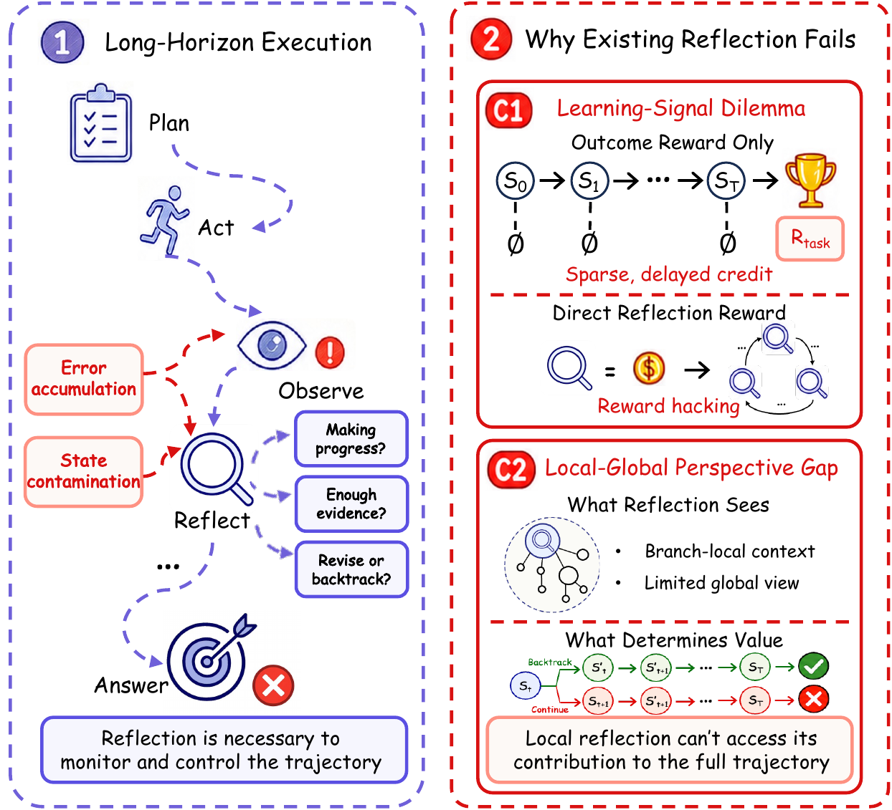
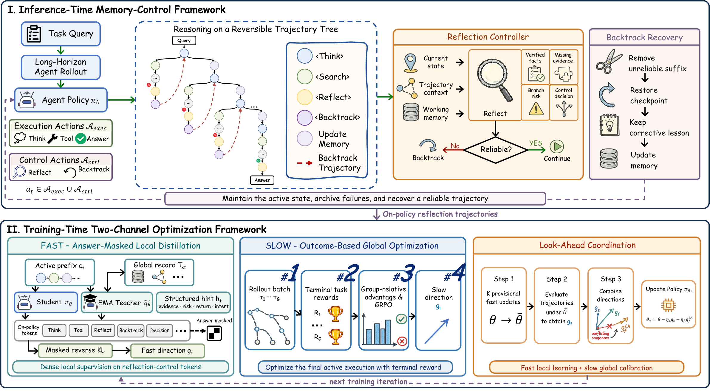
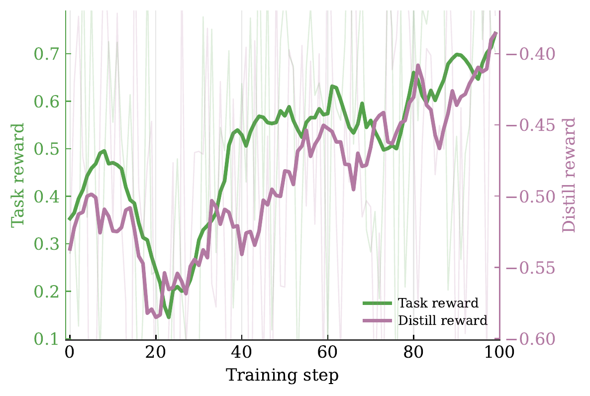

学习信号困境
反思发生在中间步骤，价值却要到轨迹结束后才能确认。终局奖励稀疏且延迟；直接设置“反思奖励”，又可能诱发频繁但无效的反思。
Boosting Long-Horizon Reflection in Search Agents via Global Perspective Distillation · 从状态表示、训练目标到实验边界的完整拆解
LoongReflect 的核心判断是：长程 Agent 的反思不是一种文风，而是一项轨迹控制决策。它必须判断当前证据是否可靠、错误从哪个节点开始、应继续还是回退，以及回退后哪些信息仍值得保留。
长程执行容易出现“状态污染”：不相关检索、错误实体关联或过时结论一旦进入活动上下文，就会持续影响后续查询与判断。普通 self-reflection 通常只是追加一段批评文本，旧分支仍留在上下文中，因此“识别错误”并不等于“恢复到可靠状态”。
在进入训练方法之前，需要先把反思失败拆成两个不同问题。“学习信号困境”解释为什么中间动作难以获得可靠奖励，“局部—全局视角差”解释为什么当前看来合理的分支未必提高最终成功率；二者分别对应后文的局部监督与终局校准。
反思发生在中间步骤，价值却要到轨迹结束后才能确认。终局奖励稀疏且延迟；直接设置“反思奖励”，又可能诱发频繁但无效的反思。
Agent 决策时只看到当前分支，而继续、修订或放弃该分支的真实价值，取决于它对最终任务结果的贡献。
论文的落点：反思应被建模为 memory-control policy——明确哪些事实保留、哪些假设标记为风险、返回哪个检查点，以及恢复后的分支必须满足什么约束。局部诊断由密集教师信号学习，最终价值由完整轨迹奖励校准。

左侧展示错误如何随长程执行累积；右侧区分终局奖励稀疏、直接反思奖励可能被利用，以及局部分支无法预知最终价值三类问题。
阅读要点：C1 解释为什么反思难以获得可靠的中间反馈；C2 说明局部决定必须由完整轨迹结果校准。双通道训练分别回应这两个缺口。
传统做法通常把反思视为“在当前文本后继续推理”；LoongReflect 把反思拆成诊断与状态转移。真正产生恢复效果的是后续的 backtrack、检查点选择和压缩更新，而不仅是模型承认自己可能错了。
方法的关键不是更长的上下文，而是把“当前可用状态”和“保留用于诊断的历史”明确分开。
对任务 x，Agent 的状态不再是一条不断增长的线性消息，而由轨迹树、活动路径和压缩工作记忆组成。树保存所有历史分支；只有活动路径及其压缩记忆参与下一步生成。被放弃的后缀不会消失，而是转入 archive，继续为错误诊断和训练提供证据。
Tt 是完整轨迹树，Pt 是当前活动路径，mt 是从活动路径压缩出的工作记忆。生成上下文只序列化 x、Pt 与 mt。

左半部分描述运行时的 Reflect—Backtrack—Recovery；右半部分给出回答屏蔽的 Fast distillation、终局奖励驱动的 Slow optimization，以及提交更新前的 Look-Ahead 校准。
阅读要点：运行时机制负责把不可靠后缀移出活动上下文；训练机制为局部反思提供密集信号，并用终局结果限制更新方向。
<reflect> 输出四元结构：已验证证据、当前风险、建议返回节点和 continue/backtrack 控制意图。它的任务不是产生新答案，而是判断活动状态是否仍可信。<backtrack> 则由控制器从近到远检查候选节点，恢复最近的可靠前缀，将错误后缀移出活动上下文，并写入一段面向未来的纠正约束。
恢复后的路径由可靠前缀 Pj 和压缩纠正信息 uj:t 组成；被判定不可靠的后缀进入 archived branches，而不是继续污染生成上下文。
首轮检索确认 Joanna 是 John I of Aragon 与第一任妻子 Martha of Armagnac 的女儿，目标实体应锁定为 Martha。
后续搜索命中 John I 的第二任妻子 Yolande of Bar 及其 1431 年去世日期。这个日期有文献支持，却对应错误人物，是典型的“局部正确、任务关系错误”。
反思把错误诊断为 spouse substitution，指定返回最早确认母女关系的节点；Yolande 分支被归档，活动上下文只保留 Martha 作为目标实体。
新分支直接检索 Martha 的完整生卒日期，并再次检索 Joanna—Martha 关系，最终把两跳证据连接为 23 October 1378。
系统并非删除所有失败信息：Yolande 分支被保留用于解释歧义，却不再参与答案生成。这种“诊断可见、执行隔离”的状态设计，是可逆轨迹树相对于简单上下文截断的关键差异。
Fast channel 教模型在局部状态下怎样诊断；Slow channel 判断这些诊断最终是否真的提高任务成功；Look-Ahead 在提交参数更新前处理两者冲突。
Fast channel 使用策略的 EMA 副本作为教师。教师能看到回答已被遮蔽的完整轨迹树、活动/归档标记和二值终局结果，并生成 verified_state、first_risk、return_node、next_decision、lesson 五个字段。最终答案及所有答案别名都会被替换为 [MASKED_ANSWER]，因此教师提供的是控制提示，而不是答案泄漏。
教师与学生对同一段学生 continuation 打分，但损失掩码只覆盖 <reflect> 和 <backtrack> 范围。论文采用截断的 reverse-KL 估计，让局部控制动作获得比终局奖励更密集的监督。
mref 只选择反思控制 token；δ 是学生与 EMA 教师对同一 token 的 log-probability 差；截断常数 c=10 抑制极端估计。
Slow channel 对同一问题采样四条完整轨迹，以标准化 exact match 得到二值终局奖励，再通过组内相对优势进行 GRPO 更新。归档分支仍可为 Fast channel 提供诊断监督，但不单独获得终局信用；Slow loss 只作用于最终活动执行中的策略 token，排除工具观察和控制器注入文本。
局部反思看起来是否合理并不重要；只有它帮助整条活动轨迹获得更高终局奖励，Slow channel 才把正信用分配给相关策略行为。
系统先临时执行 K 次 Fast 更新得到候选策略，再在该候选位置计算 Slow 方向。如果两方向内积为负，说明局部教师偏好的更新会损害终局目标，于是只移除 Fast 方向中与 Slow 方向冲突的分量，最后回到原始参数位置提交融合更新。这不是简单加权两个 loss，而是在参数方向上先验证再提交。
最终更新为 θ⁺ = θ - ηsgs - ηfgLAf。论文主设置为 K=3、w=ηf/ηs=1。
| 环节 | 论文设置 | 为什么重要 |
|---|---|---|
| SFT 数据 | Qwen3-32B 生成；600 条保留轨迹；至少 5 轮且包含反思；Search-R1 失败而反思轨迹成功 | 训练集被主动筛向“普通搜索失败、反思恢复成功”的困难案例 |
| SFT | 1 epoch；16,384 token；LoRA rank 64；学习率 5×10-6 | 先建立 reflect/backtrack 的可执行先验 |
| RL | 100 outer steps；每步 8 prompts × 4 trajectories；3 次 Fast + 1 次 Slow | 每个 outer step 使用 32 条 rollout，并在提交前做方向协调 |
| 检索 | 2023-11-01 英文 Wikipedia；top-k=3；最多 16 轮；每轮 1,024 token | 所有检索基线共享同一检索器、预算与答案归一化设置 |
| 硬件 | 单节点 8× NVIDIA A800-SXM4-80GB | 可逆搜索与三快一慢训练具有不可忽略的计算门槛 |
论文围绕四个问题组织证据：总体性能、跨领域迁移、SFT 与 RL 的相对贡献，以及反思动作和双通道优化的消融。
阅读主结果前，先固定训练数据、评测范围和对照条件。只有三者同时明确，跨数据集增益才具有可比性；下面的概览用于建立实验口径，后续表格再展开具体模型、指标与数值。
| 模型 / 方法 | 2Wiki | HotpotQA | Bamboogle | FRAMES | MuSiQue | NQ | TriviaQA | 平均 |
|---|---|---|---|---|---|---|---|---|
| Qwen2.5-3B · F1 (%) | ||||||||
| Search-R1 | 29.90 | 37.24 | 29.90 | 10.76 | 13.53 | 34.73 | 55.08 | 30.16 |
| AgenticRAG-R1 | 32.92 | 44.00 | 31.48 | 16.23 | 16.48 | 37.15 | 56.62 | 33.55 |
| LoongReflect | 48.01 | 56.17 | 35.25 | 23.51 | 31.02 | 55.37 | 73.72 | 46.15 |
| Qwen2.5-7B · F1 (%) | ||||||||
| Search-R1 | 35.03 | 38.89 | 42.04 | 18.01 | 19.08 | 29.59 | 55.91 | 34.08 |
| AgenticRAG-R1 | 38.34 | 45.15 | 49.21 | 19.44 | 22.01 | 23.60 | 58.45 | 36.60 |
| LoongReflect | 54.44 | 53.27 | 53.89 | 23.17 | 25.81 | 58.98 | 74.91 | 49.21 |
论文报告，LoongReflect 相对最强基线 AgenticRAG-R1 的平均 F1 在 3B 和 7B 上分别提高 12.60 和 12.61 点。3B 的同分布均值从 38.46 提高到 52.09，分布外均值从 31.59 提高到 43.77；7B 分别从 41.75 提高到 53.86、从 34.54 提高到 47.35。增益跨模型规模和五个分布外集合出现，支持“并非只记住训练数据集模式”的主张。
但论文只给出单一随机种子下的点估计，没有报告方差或置信区间。因此，表格可以支持“在所报告配置中一致领先”，尚不足以判断不同随机种子下增益的稳定性。
| 阶段 | 3B 平均 | 7B 平均 |
|---|---|---|
| RAW | 30.33 | 37.73 |
| SFT | 34.76 | 41.27 |
| SFT + RL | 46.15 | 49.21 |
| 方法 | MATH | GSM8K |
|---|---|---|
| AgenticRAG-R1 | 54.8 | 80.6 |
| RLSD | 53.6 | 80.7 |
| LoongReflect | 56.0 | 82.4 |
SFT 相对 RAW 提升 4.43（3B）和 3.54（7B）点；双通道 RL 又增加 11.39 和 7.94 点。阶段对照表明，示范轨迹可以建立初始恢复行为，而更大的平均增量出现在加入终局校准的 RL 后。数学迁移增益小于 QA 主表，因此只能视为初步的跨任务证据。
| Qwen2.5-3B 设置 | 平均 F1 | 相对完整模型 | 解释 |
|---|---|---|---|
| 完整 LoongReflect | 46.15 | — | Reflect + Backtrack + Fast + Slow + Look-Ahead |
| 移除 Reflect | 30.84 | -15.31 | 缺少显式状态诊断 |
| 移除 Backtrack | 33.09 | -13.06 | 能发现问题但无法把污染后缀移出活动上下文 |
| 移除 Fast distillation | 40.51 | -5.64 | 失去密集局部控制监督 |
| 移除 Slow optimization | 39.11 | -7.04 | 局部控制不再受终局任务结果校准 |
| 移除 Look-Ahead | 41.21 | -4.94 | Fast 与 Slow 的冲突方向直接进入更新 |
平均值支持两项主要机制：诊断与回退必须成对出现，局部教师与全局结果也必须协同。不过消融并非在每个数据集都更差，例如移除 Fast 时 FRAMES 与 NQ 单项高于完整模型。这意味着论文证明的是跨数据集平均互补性，而不是每个模块在所有分布上都单调有益。

绿色任务奖励总体上升；紫色蒸馏奖励从较低值向零移动。论文据此认为，策略对局部反思指导的拟合与完整轨迹表现可以同时改善。
谨慎解读：两条平滑曲线共同改善与设计预期一致，但图中原始轨迹波动很大，且不能单独建立“Look-Ahead 导致提升”的因果关系；该归因需要结合移除 Look-Ahead 的消融。
当 w=1 时，平均 F1 从 K=1 的 41.26 上升到 K=3 的 46.15，K=4 又回落到 44.71；固定 K=3 时，w=1 优于 0.5 和 2.0。结果表明，局部更新不足会限制适应，局部方向权重过大又可能压过终局信号。
LoongReflect 给出了一条结构完整的证据链，但结论仍受任务范围、控制器质量、计算成本和报告协议限制。
错误的 verified state、返回节点或压缩 lesson 会进入新分支。Backtracking 提供可恢复接口，但不保证检查点选择正确；论文也将 checkpoint-selection accuracy 与压缩错误传播列为后续问题。
终局奖励使用归一化 exact match，评测则使用 token F1。合法别名可能在训练时被判为失败，却在评测时获得部分分数，这会改变策略接收到的信用信号。
可逆多轮搜索、三次 Fast 候选更新和一次 Slow 更新都会增加计算。论文未报告与基线严格配平的 wall-clock、token 或环境调用成本，因此不能据此判断成本效率。
实验覆盖两个训练数据集、七个 QA 集合和两个数学集合，检索语料为英文 Wikipedia 快照；同时未报告多随机种子方差。浏览器、代码、GUI 与真实业务 Agent 仍需单独验证。
| 变量 | 论文口径 | 复现风险 |
|---|---|---|
| 训练来源 | HotpotQA + 2Wiki；600 条筛选后 SFT 轨迹 | 筛选条件显著改变训练难度，不能只复现样本数 |
| 检索环境 | 2023-11-01 英文 Wikipedia；top-k=3 | 换语料或检索器会改变状态污染与回退频率 |
| 轨迹预算 | 16 轮、每轮 1,024 token、总长 16,384 | 更长预算本身可能抬高成功率 |
| 更新日程 | 100 outer steps；K=3；w=1 | Fast/Slow 比例改变可能导致优化方向冲突 |
| 报告协议 | 单一随机种子点估计；评测为 answer-level token F1 | 缺少多随机种子方差，不能只比较单次最优值 |
这篇论文最有价值的贡献不是“让模型更会反思”，而是把反思变成一个可观察、可执行、可回退、可单独分配信用的控制接口。主结果和消融对该机制提供了较强支持；但成本、公平预算、多随机种子稳定性及跨环境泛化仍是决定其工程价值的关键缺口。
本文依据 arXiv:2608.11967 正文与附录整理。除特别说明外，公式、配置与实验数值均为论文报告结果；本文未进行独立复现实验。